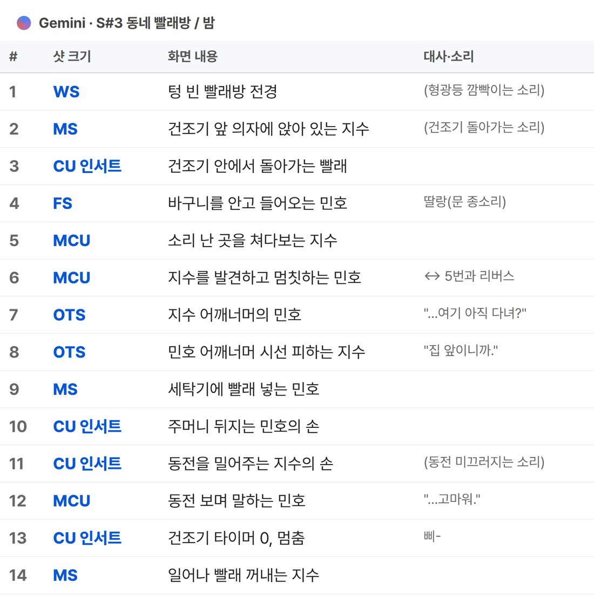

씬 하나를 붙여넣으면 샷 번호·크기·앵글·대사까지 표로 나와요. 무료 제미나이로 직접 돌려 본 프롬프트예요.
한눈에
씬 하나씩 넣으세요. 대본 전체를 넣으면 샷이 뭉개져요
규칙 4줄(열 이름·한 샷 한 동작·리버스 샷 짝·인서트 따로)이 결과를 좌우해요
표는 탭 구분 텍스트로 다시 달라고 하면 엑셀에 칸 맞춰 붙어요
결과는 회의용 초안이에요. 렌즈·무빙은 감독·촬영감독과 정하세요
이렇게 나와요
빨래방 대본 10줄을 넣었더니 1분 안에 14샷이 나왔어요. 대화 장면은 리버스 샷 짝을 맞췄고, 손·동전·건조기는 인서트 4컷으로 따로 뺐어요. (실제 결과는 7열인데 여기선 4열만 옮겼어요)

제미나이 실제 결과 · S#3 동네 빨래방 / 밤
① 기본 프롬프트
[대본] 아래에 씬 하나를 붙여넣고 보내세요.
프롬프트
아래 대본으로 촬영용 샷리스트를 표로 만들어줘.
표의 열: 샷 번호 | 샷 크기(WS·MS·CU 등) | 앵글 | 카메라 움직임 | 화면 내용 | 대사·소리 | 비고(소품·조명)
규칙:
- 한 샷에는 한 가지 동작만
- 대화 장면은 두 인물의 샷을 짝으로 맞춰줘(리버스 샷)
- 손·사물 컷은 인서트로 따로 빼줘
- 표 아래에 '촬영 순서 추천'을 3줄로: 같은 카메라 방향끼리 묶어서
[대본]
(여기에 씬 하나를 붙여넣으세요)
② 엑셀에 붙이기
같은 대화창에서 이어서 보내세요. 코드 상자 오른쪽 위 복사 버튼 → 엑셀 A1 칸에 붙여넣기.
프롬프트
위 샷리스트를 엑셀에 그대로 붙여넣을 수 있게, 탭으로 구분된 텍스트로 코드 블록 하나에 다시 줘. 첫 줄은 열 이름, 설명은 빼고.
③ 한 샷만 고치기
[ ] 안만 바꿔서 쓰세요. 새 창에서 하면 처음부터 다시 만들어요.
프롬프트
[7]번 샷을 [OTS 대신 지수 단독 CU]로 바꾸고, 그에 맞춰 짝이 되는 리버스 샷과 촬영 순서도 고쳐줘. 나머지 샷은 그대로 둬.
엑셀 양식
빈 양식 30줄, 빨래방 예시, 약어표 3개 탭이 들어 있어요. 샷 크기·OK/NG는 고르기 목록으로 돼 있어요.